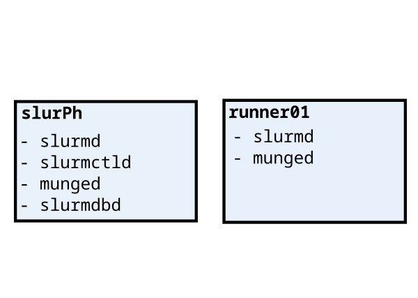

Desired topology and active services

SLURM super quick start guide
The guide is available here.
On Centos8Stream, we first install MUNGE, then install SLURM by the bzip package. Status of munge can be probed by
munge -n | unmunge
Installing the SLURM package is done manually
wget https://download.schedmd.com/slurm/slurm-23.11.3.tar.bz2
We then unzip, configure, and build SLURM
We then need to create, by the SLURM user “slurm”, the directories of
- log files
- PID files
- State save
and make them writable. We take inspiration from an existing slurm.conf file.
So the directories will be
| Function | Directory |
|---|---|
| PID files | — |
| SlurmdSpoolDir | /var/spool/slurmd |
| StateSaveLocation | /var/spool/slurmctld |
Beware, slurm is not in the sudoers group (and it must not be!).
If the directories are already there, we must chown them, and chmod them to writable by slurm.
This can be done only by a sudoer.
In order to use the SLURM API, we must link to the libraries
ldconfig -n <library-location>
in our case <library-location> is in the downloaded (and built) package.
A handy alternative: RPM
We can use rpmbuild to directly install and configure the directories and link the libraries.
We do it in the slurm user.
This method show a missing dependency
error: Failed build dependencies:
mariadb-devel >= 5.0.0 is needed by slurm-23.11.3-1.el8.x86_64
that we can easily solve by
sudo yum install mariadb-devel
A warning in the rpmbuild suggest to run libtool --finish /lib64/security. We do it, installing libtool first
We still have the problem that the commands are not available. The SLURM services are not available.
The RPM files are loacated into
~/rpmbuild/RPMS
so we need to run
rpm -i *.rpm
inside the rpms folder.
slurm.conf
We use the generator tool to make the slurm.conf file
We can now enable the daemons
systemctl enable slurmctld
systemctl enable slurmdbd
systemctl enable slurmd
and activate them
systemctl start slurmctld
systemctl start slurmdbd
systemctl start slurmd
The order is important!
We have a problem in starting the
slurmdbdservice:Condition: start condition failed at Sun 2024-02-11 17:10:08 CET; 8min ago└─ ConditionPathExists=/etc/slurm/slurmdbd.conf was not metThis is due toslurmdbd: error: s_p_parse_file: unable to read "/etc/slurm/slurmdbd.conf": Permission denied
Also, we got error
Feb 11 17:26:11 slurph.novalocal slurmdbd[7414]: slurmdbd: error: mysql_real_connect failed: 2002 Can't connect to local MySQL server through socket '/var/lib/mys>
Seems like we have problems with the installation of MariaDB. Lets run
sudo dnf install mariadb-server
Finally we are able to start the service
systemctl start mariadb.service
Who is running SLURM?
Running
slurmdbd -Dvvv
We get errors like
slurmdbd.conf owned by 1000 not SlurmUser(1003)
Seems like we have problems in read from /var/run/<PID files>
One can generate a folder inside /var/run and chown it, but since /var/run is tmpfs it will go after a system reboot.
The solution seems to be to run a mkdir + chown script at startup. This is to be implemented.
The script looks like (/home/centos/startup_pid.sh)
#! /bin/bash
mkdir /var/run/slurm
chown slurm /var/run/slurm
Still we have problems in connecting to the database. This is a problem also on the startup of slurmd.service.
Obviously, we lack a DB configuration.
Database configuration
We follow commands from the previous link.
Unable to determine this slurmd’s nodename
This problem is related to the impossibility to detect runner01.
Before running the slurmd daemon, we need to setup the computing nodes.
Now our slurmctld and slurmdbd are running.
Configuraiton of the computing node(s)
Follow instruction from youtube.
After the configuration, and running the slurmd on runner01, the slurmctld.log file on the slurPh machine indicates a problem with
[2024-02-12T17:57:04.216] error: Node runner01 appears to have a different slurm.conf than the slurmctld. This could cause issues with communication and functionality. Please review both files and make sure they are the same. If this is expected ignore, and set DebugFlags=NO_CONF_HASH in your slurm.conf.
and most importantly, an authentication problem by Munge
[2024-02-12T17:57:18.718] error: Munge decode failed: Unauthorized credential for client UID=1003 GID=1003
We should check
munge -n | unmunge
Both machines return a success code.
runner01:
STATUS: Success (0)
ENCODE_HOST: runner01.novalocal (10.64.37.114)
ENCODE_TIME: 2024-02-12 18:02:47 +0100 (1707757367)
DECODE_TIME: 2024-02-12 18:02:47 +0100 (1707757367)
TTL: 300
CIPHER: aes128 (4)
MAC: sha256 (5)
ZIP: none (0)
UID: centos (1000)
GID: centos (1000)
LENGTH: 0
slurPh:
STATUS: Success (0)
ENCODE_HOST: runner01.novalocal (10.64.37.114)
ENCODE_TIME: 2024-02-12 18:02:47 +0100 (1707757367)
DECODE_TIME: 2024-02-12 18:02:47 +0100 (1707757367)
TTL: 300
CIPHER: aes128 (4)
MAC: sha256 (5)
ZIP: none (0)
UID: centos (1000)
GID: centos (1000)
LENGTH: 0
The problem seems to be that UID and GID are not the same in the two machines runner01:
File: /etc/slurm
Size: 4096 Blocks: 8 IO Block: 4096 directory
Device: fc01h/64513d Inode: 30103776 Links: 2
Access: (0777/drwxrwxrwx) Uid: ( 1001/ slurm) Gid: ( 1001/ slurm)
slurPh:
File: /etc/slurm
Size: 4096 Blocks: 8 IO Block: 4096 directory
Device: fc01h/64513d Inode: 25439750 Links: 2
Access: (0755/drwxr-xr-x) Uid: ( 1003/ slurm) Gid: ( 1003/ slurm)
the id munge command returns, strangely:
runner01:
uid=991(munge) gid=988(munge) groups=988(munge)
slurPh:
uid=991(munge) gid=988(munge) groups=988(munge)
We need to set the right UID, and change the permissions to /etc/munge/munge.key on both machines.
We run groupmod -g 1099 munge, and usermod -u 1004 -g 1099 munge. In order not to have conflicts with other users, we list all users by cut -d: -f1,3 /etc/passwd. To list all groups with GID: getent group.
With the changed users, the munge daemon fails to start.
In the log file, we also notice
2024-02-12 17:57:18 +0100 Info: Unauthorized credential for client UID=1003 GID=1003
previous attempts by slurm user on runner01 (?) to authenticate. The change of user created ownership issues on log files and on the PRNG generator folder. We fix it by
sudo chown munge:munge -R /etc/munge
sudo chown munge:munge -R /var/lib/munge
sudo chown munge:munge -R /var/log/munge
Ok, we still have unable to determine this node name.
scontrol ping on runner01 still gives
Slurmctld(primary) at slurph is DOWN
There is more: every execution of the ping on runner01 triggers the writing of
2024-02-12 18:34:26 +0100 Info: Unauthorized credential for client UID=1003 GID=1003
in var/log/munge/munged.log!